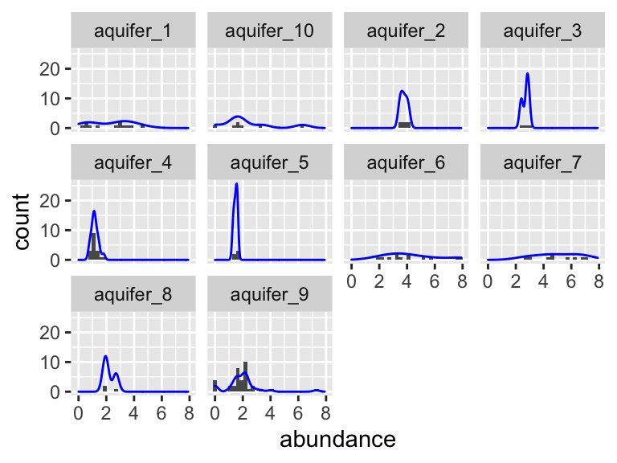
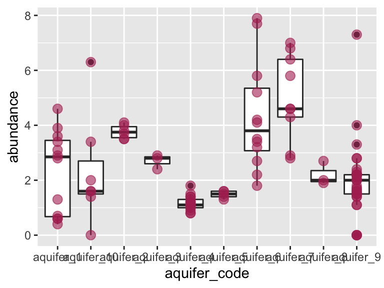
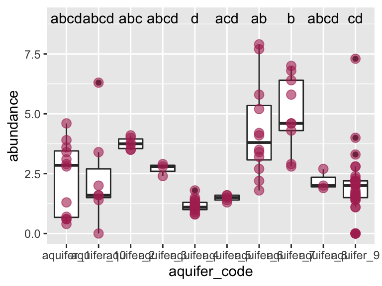

16 comparing means
Often, we want to know if our study subjects contain different amounts of certain analytes. For example, “Does this lake over here contain more potassium than that lake over there?” For this, we need statistical tests. Here, we will have a look at comparing mean values for analyte abundance in situations with two samples and in situations with more than two samples.
To run these statistical analyses, we will need several new R packages: rstatix, agricolae, and multcompView. Please install these with install.packages("rstatix"), install.packages("agricolae"), and install.packages("multcompView"). Load them into your R session using library(rstatix), library(agricolae), and library(multcompView).
16.1 Getting Ready
16.1.1 The null hypothesis
When we conduct a statistical test, we are testing the null hypothesis. The null hypothesis is that there is no difference bewteen the means (hence the name “null”).
16.1.2 The p value
The p value represents the probability of getting data as extreme as our results if the null hypothesis is true. In other words - the p value is the probability that we would observe the differences we did, if in fact there were no differences in the means at all.
16.1.3 The plan
Below is a flow chart illustrating how it is recommended that statistical tests be used in this course.

16.2 Two means
When we are comparing two means, we need to first determine what kind of statistical test we can use on our data. If (i) our data can be modelled by a normal distribution and (ii) the variances about the two means are similar, then we can use a more powerful test (i.e. a test that will be more likely to detect a difference in means, assuming one exists).
We can check our data for normality and similar variances using the Shapiro test and the Levene test. Let’s use the hawaii_aquifers data as an example, and let’s consider only the element potassium:
source("https://thebustalab.github.io/phylochemistry/phylochemistry.R")
K_data <- hawaii_aquifers %>%
dplyr::filter(analyte == "K")
K_data
## # A tibble: 110 × 6
## aquifer_code well_name longitude latitude analyte abundance
## <chr> <chr> <dbl> <dbl> <chr> <dbl>
## 1 aquifer_1 Alewa_Heights_Spring NA NA K 0.6
## 2 aquifer_1 Beretania_High_Service NA NA K 3.1
## 3 aquifer_1 Beretania_Low_Service NA NA K 3.6
## 4 aquifer_1 Kuliouou_Well -158. 21.3 K 3.9
## 5 aquifer_1 Manoa_Well_II -158. 21.3 K 0.6
## 6 aquifer_1 Moanalua_Wells_Pump_1 -158. 21.4 K 2.9
## 7 aquifer_1 Moanalua_Wells_Pump_2 -158. 21.4 K 2.8
## 8 aquifer_1 Moanalua_Wells_Pump_3 -158. 21.4 K 3.4
## 9 aquifer_1 Nuuanu_Aerator_Well -158. 21.4 K 0.4
## 10 aquifer_1 Palolo_Tunnel -158. 21.3 K 0.7
## # … with 100 more rowsTo work with two means, let’s just look at aquifers 1 and 6:
K_data_1_2 <- K_data %>%
dplyr::filter(aquifer_code %in% c("aquifer_1", "aquifer_6"))
K_data_1_2
## # A tibble: 24 × 6
## aquifer_code well_name longitude latitude analyte abundance
## <chr> <chr> <dbl> <dbl> <chr> <dbl>
## 1 aquifer_1 Alewa_Heights_Spring NA NA K 0.6
## 2 aquifer_1 Beretania_High_Service NA NA K 3.1
## 3 aquifer_1 Beretania_Low_Service NA NA K 3.6
## 4 aquifer_1 Kuliouou_Well -158. 21.3 K 3.9
## 5 aquifer_1 Manoa_Well_II -158. 21.3 K 0.6
## 6 aquifer_1 Moanalua_Wells_Pump_1 -158. 21.4 K 2.9
## 7 aquifer_1 Moanalua_Wells_Pump_2 -158. 21.4 K 2.8
## 8 aquifer_1 Moanalua_Wells_Pump_3 -158. 21.4 K 3.4
## 9 aquifer_1 Nuuanu_Aerator_Well -158. 21.4 K 0.4
## 10 aquifer_1 Palolo_Tunnel -158. 21.3 K 0.7
## # … with 14 more rows
ggplot(K_data_1_2, aes(x = aquifer_code, y = abundance)) +
geom_boxplot() +
geom_point()
Are these data normally distributed? Do they have similar variance? Let’s get a first approximation by looking at a plot:
K_data_1_2 %>%
ggplot(aes(x = abundance)) +
geom_histogram(bins = 30) +
facet_wrap(~aquifer_code) +
geom_density(aes(y = ..density..*10), colour = "blue")
Based on this graphic, it’s hard to say! Let’s use a statistical test to help. When we want to run the Shaprio test, we are looking to see if each group has normally distributed here (here group is “aquifer_code”, i.e. aquifer_1 and aquifer_6). This means we need to group_by(aquifer_code) before we run the test:
K_data_1_2 %>%
group_by(aquifer_code) %>%
shapiro_test(abundance)
## # A tibble: 2 × 4
## aquifer_code variable statistic p
## <chr> <chr> <dbl> <dbl>
## 1 aquifer_1 abundance 0.885 0.102
## 2 aquifer_6 abundance 0.914 0.239Both p-values are above 0.05! This means that the distributions are not significantly different from a normal distribution. What about the variances about the two means? Are they similar? For this we need a Levene test. With that test, we are not looking within each group, but rather across groups - this means we do NOT need to group_by(aquifer_code) and should specify a y ~ x formula instead:
K_data_1_2 %>%
levene_test(abundance ~ aquifer_code)
## # A tibble: 1 × 4
## df1 df2 statistic p
## <int> <int> <dbl> <dbl>
## 1 1 22 0.289 0.596The p-value from this test is 0.596! This means that their variances are not significantly different. Now, since our data passed both test, this means we can use a normal t-test. A t-test is a parametric test. This means that it relies on modelling the data using a normal distribution in order to make comparisons. It is also a powerful test. This means that it is likely to detect a difference in means, assuming one is present. Let’s try it out:
K_data_1_2 %>%
t_test(abundance ~ aquifer_code)
## # A tibble: 1 × 8
## .y. group1 group2 n1 n2 statistic df p
## * <chr> <chr> <chr> <int> <int> <dbl> <dbl> <dbl>
## 1 abundance aquifer_1 aquifer_6 12 12 -2.75 20.5 0.0121A p-value of 0.012! This is below 0.05, meaning that there is a 95% chance that the two means are different. Suppose that our data had not passed the Shapiro and/or Levene tests. We would then need to use a Wilcox test. The Wilcox test is a non-parametric test, which means that it does not use a normal distribution to model the data in order to make comparisons. This means that is a less powerful test than the t-test, which means that it is less likely to detect a difference in the means, assuming there is one. For fun, let’s try that one out and compare the p-values from the two methods:
K_data_1_2 %>%
wilcox_test(abundance ~ aquifer_code)
## # A tibble: 1 × 7
## .y. group1 group2 n1 n2 statistic p
## * <chr> <chr> <chr> <int> <int> <dbl> <dbl>
## 1 abundance aquifer_1 aquifer_6 12 12 33.5 0.0282A p-value of 0.028! This is higher than the value given by the t-test (0.012). That is because the Wilcox test is a less powerful test: it is less likely to detect differences in means, assuming they exist.
16.3 More than two means
In the previous section we compared two means. What if we want to compare means from more than two study subjects? The first step is again to determine which tests to use. Let’s consider our hawaii aquifer data again, though this time let’s use all the aquifers, not just two:
K_data <- hawaii_aquifers %>%
dplyr::filter(analyte == "K")
K_data
## # A tibble: 110 × 6
## aquifer_code well_name longitude latitude analyte abundance
## <chr> <chr> <dbl> <dbl> <chr> <dbl>
## 1 aquifer_1 Alewa_Heights_Spring NA NA K 0.6
## 2 aquifer_1 Beretania_High_Service NA NA K 3.1
## 3 aquifer_1 Beretania_Low_Service NA NA K 3.6
## 4 aquifer_1 Kuliouou_Well -158. 21.3 K 3.9
## 5 aquifer_1 Manoa_Well_II -158. 21.3 K 0.6
## 6 aquifer_1 Moanalua_Wells_Pump_1 -158. 21.4 K 2.9
## 7 aquifer_1 Moanalua_Wells_Pump_2 -158. 21.4 K 2.8
## 8 aquifer_1 Moanalua_Wells_Pump_3 -158. 21.4 K 3.4
## 9 aquifer_1 Nuuanu_Aerator_Well -158. 21.4 K 0.4
## 10 aquifer_1 Palolo_Tunnel -158. 21.3 K 0.7
## # … with 100 more rows
ggplot(data = K_data, aes(x = aquifer_code, y = abundance)) +
geom_boxplot() +
geom_point(color = "maroon", alpha = 0.6, size = 3)
Let’s check visually to see if each group is normally distributed and to see if they have roughly equal variance:
K_data %>%
group_by(aquifer_code) %>%
ggplot(aes(x = abundance)) +
geom_histogram(bins = 30) +
facet_wrap(~aquifer_code) +
geom_density(aes(y = ..density..*10), colour = "blue")Again, it is somewhat hard to tell visually if these data are normally distributed. It seems pretty likely that they have different variances about the means, but let’s check using the Shapiro and Levene tests. Don’t forget: with the Shaprio test, we are looking within each group and so need to group_by(), with the Levene test, we are looking across groups, and so need to provide a y~x formula:
K_data %>%
group_by(aquifer_code) %>%
shapiro_test(abundance)
## # A tibble: 10 × 4
## aquifer_code variable statistic p
## <chr> <chr> <dbl> <dbl>
## 1 aquifer_1 abundance 0.885 0.102
## 2 aquifer_10 abundance 0.864 0.163
## 3 aquifer_2 abundance 0.913 0.459
## 4 aquifer_3 abundance 0.893 0.363
## 5 aquifer_4 abundance 0.948 0.421
## 6 aquifer_5 abundance 0.902 0.421
## 7 aquifer_6 abundance 0.914 0.239
## 8 aquifer_7 abundance 0.915 0.355
## 9 aquifer_8 abundance 0.842 0.220
## 10 aquifer_9 abundance 0.786 0.00000866K_data %>%
levene_test(abundance ~ aquifer_code)
## # A tibble: 1 × 4
## df1 df2 statistic p
## <int> <int> <dbl> <dbl>
## 1 9 100 3.12 0.00239Based on these tests, it looks like the data for aquifer 9 is significantly different from a normal distribution (Shaprio test p = 0.000008), and the means are certainly different from one another (Levene test p = 0.002).
Let’s assume for a second that our data passed these tests. This means that we could reasonably model our data with normal distributions and use a parametric test to compare means. This means that we can use an ANOVA to test for differences in means.
16.3.1 ANOVA, Tukey tests
We will use the anova_test function from the package rstatix. It will tell us if any of the means in the data are statistically different from one another. However, if there are differences between the means, it will not tell us which of them are different.
K_data %>%
anova_test(abundance ~ aquifer_code)
## Coefficient covariances computed by hccm()
## ANOVA Table (type II tests)
##
## Effect DFn DFd F p p<.05 ges
## 1 aquifer_code 9 100 10.021 7.72e-11 * 0.474A p-value of 7.7e-11! There are definitely some significant differences among this group. But, WHICH are different from one another though? For this, we need to run Tukey’s Honest Significant Difference test (implemented using tukey_hsd). This will essentially run t-test on all the pairs of study subjects that we can derive from our data set (in this example, aquifer_1 vs. aquifer_2, aquifer_1 vs. aquifer_3, etc.). After that, it will correct the p-values according to the number of comparisons that it performed. This controls the rate of type I error that we can expect from the test. These corrected values are provided to us in the p.adj column.
K_data %>%
tukey_hsd(abundance ~ aquifer_code)
## # A tibble: 45 × 9
## term group1 group2 null.value estimate conf.low conf.high p.adj
## * <chr> <chr> <chr> <dbl> <dbl> <dbl> <dbl> <dbl>
## 1 aquifer_code aquifer_1 aquif… 0 0.00357 -2.00 2.01 1 e+0
## 2 aquifer_code aquifer_1 aquif… 0 1.44 -0.668 3.55 4.56e-1
## 3 aquifer_code aquifer_1 aquif… 0 0.375 -2.35 3.10 1 e+0
## 4 aquifer_code aquifer_1 aquif… 0 -1.15 -2.75 0.437 3.68e-1
## 5 aquifer_code aquifer_1 aquif… 0 -0.845 -3.09 1.40 9.68e-1
## 6 aquifer_code aquifer_1 aquif… 0 1.98 0.261 3.71 1.15e-2
## 7 aquifer_code aquifer_1 aquif… 0 2.70 0.837 4.56 3.56e-4
## 8 aquifer_code aquifer_1 aquif… 0 -0.125 -2.85 2.60 1 e+0
## 9 aquifer_code aquifer_1 aquif… 0 -0.378 -1.78 1.03 9.97e-1
## 10 aquifer_code aquifer_10 aquif… 0 1.44 -0.910 3.79 6.13e-1
## # … with 35 more rows, and 1 more variable: p.adj.signif <chr>Using the output from our tukey test, we can determine which means are similar. We can do this using the p_groups function:
source("https://thebustalab.github.io/phylochemistry/phylochemistry.R")
groups_based_on_tukey <- K_data %>%
tukey_hsd(abundance ~ aquifer_code) %>%
p_groups()
groups_based_on_tukey
## treatment group spaced_group
## aquifer_1 aquifer_1 ab ab
## aquifer_10 aquifer_10 abc abc
## aquifer_2 aquifer_2 acd a cd
## aquifer_3 aquifer_3 abcd abcd
## aquifer_4 aquifer_4 b b
## aquifer_5 aquifer_5 ab ab
## aquifer_6 aquifer_6 cd cd
## aquifer_7 aquifer_7 d d
## aquifer_8 aquifer_8 abc abc
## aquifer_9 aquifer_9 ab abWe can use the output from p_groups to annotate our plot:
ggplot(data = K_data, aes(x = aquifer_code, y = abundance)) +
geom_boxplot() +
geom_point(color = "maroon", alpha = 0.6, size = 3) +
geom_text(data = groups_based_on_tukey, aes(x = treatment, y = 9, label = group))
Excellent! This plot shows us, using the letters above each aquifer, which means are the same and which are different. If a letter is shared among the labels above two aquifers, it means that their means do not differ significantly. For example, aquifer 2 and aquifer 6 both have “b” in their labels, so their means are not different - and are the same as those of aquifers 3 and 10.
16.3.2 Kruskal, Dunn tests
The above ANOVA example is great, but remember - our data did not pass the Shapiro or Levene tests. This means not all our data can be modelled by a normal distribution and taht we need to use a non-parametric test. The non-parametric alternative to the ANOVA is called the Kruskal test. Like the Wilcox test, it is less powerful that its parametric relative, meaning that it is less likely to detected differences, should they exist. However, since our data do not pass the Shapiro/Levene tests, we have to resort to the Kruskal test. Let’s try it out:
K_data %>%
kruskal_test(abundance ~ aquifer_code)
## # A tibble: 1 × 6
## .y. n statistic df p method
## * <chr> <int> <dbl> <int> <dbl> <chr>
## 1 abundance 110 57.7 9 0.0000000037 Kruskal-WallisA p-value of 3.9e-9! This is higher than the p-value from running ANOVA on the same data (remember, the Kruskal test is less powerful). Never the less, the value is still well below 0.05, meaning that some of the means are different. So, how do we determine WHICH are different from one another? When we ran ANOVA the follow-up test (the post hoc test) was Tukey’s HSD. After the Kruskal test, the post hoc test we use is the Dunn test. Let’s try:
K_data %>%
dunn_test(abundance ~ aquifer_code)
## # A tibble: 45 × 9
## .y. group1 group2 n1 n2 statistic p p.adj p.adj.signif
## * <chr> <chr> <chr> <int> <int> <dbl> <dbl> <dbl> <chr>
## 1 abundance aquifer_1 aquifer_10 12 7 -0.205 0.838 1 ns
## 2 abundance aquifer_1 aquifer_2 12 6 2.25 0.0242 0.702 ns
## 3 abundance aquifer_1 aquifer_3 12 3 0.911 0.362 1 ns
## 4 abundance aquifer_1 aquifer_4 12 17 -2.70 0.00702 0.232 ns
## 5 abundance aquifer_1 aquifer_5 12 5 -1.15 0.252 1 ns
## 6 abundance aquifer_1 aquifer_6 12 12 2.53 0.0113 0.351 ns
## 7 abundance aquifer_1 aquifer_7 12 9 3.02 0.00254 0.0967 ns
## 8 abundance aquifer_1 aquifer_8 12 3 0.182 0.855 1 ns
## 9 abundance aquifer_1 aquifer_9 12 36 -0.518 0.605 1 ns
## 10 abundance aquifer_10 aquifer_2 7 6 2.20 0.0278 0.777 ns
## # … with 35 more rowsThis gives us adjusted p-values for all pairwise comparisons. Once again, we can use p_groups() to give us a compact letter display for each group, which can then be used to annotate the plot:
groups_based_on_tukey <- K_data %>%
dunn_test(abundance ~ aquifer_code) %>%
p_groups()
groups_based_on_tukey
## treatment group spaced_group
## aquifer_1 aquifer_1 abcd abcd
## aquifer_10 aquifer_10 abcd abcd
## aquifer_2 aquifer_2 abc abc
## aquifer_3 aquifer_3 abcd abcd
## aquifer_4 aquifer_4 d d
## aquifer_5 aquifer_5 acd a cd
## aquifer_6 aquifer_6 ab ab
## aquifer_7 aquifer_7 b b
## aquifer_8 aquifer_8 abcd abcd
## aquifer_9 aquifer_9 cd cd
ggplot(data = K_data, aes(x = aquifer_code, y = abundance)) +
geom_boxplot() +
geom_point(color = "maroon", alpha = 0.6, size = 3) +
geom_text(data = groups_based_on_tukey, aes(x = treatment, y = 9, label = group))
Note that these groupings are different from those generated by ANOVA/Tukey.
16.4 Further reading
For more on comparing multiple means in R: www.datanovia.com
For more on parametric versus non-parametric tests: Statistics by Jim